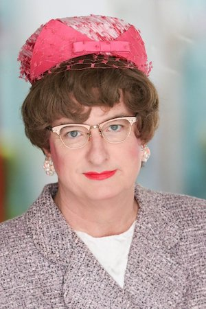

-

Sister Helen Holy has graciously agreed to serve as officiant.
Sister is head of the 701 club, because she's just a little bit better than that other person. She is known for her pithy opinions and insistence on long hours of prayer, on your knees. Often found ministering on the high seas (to expand the ministry), Sister has become a well known figure in the Dallas entertainment scene.
We are thrilled that Sister Helen Holy is available for our needs and can't wait for you to see the ministry.